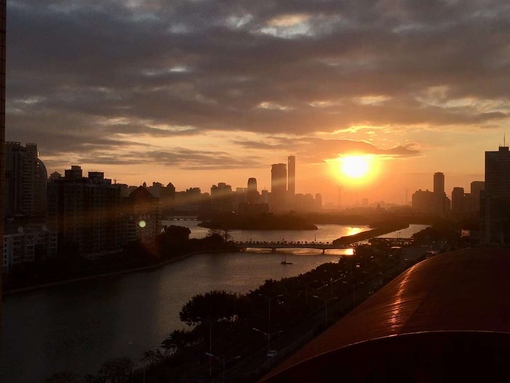
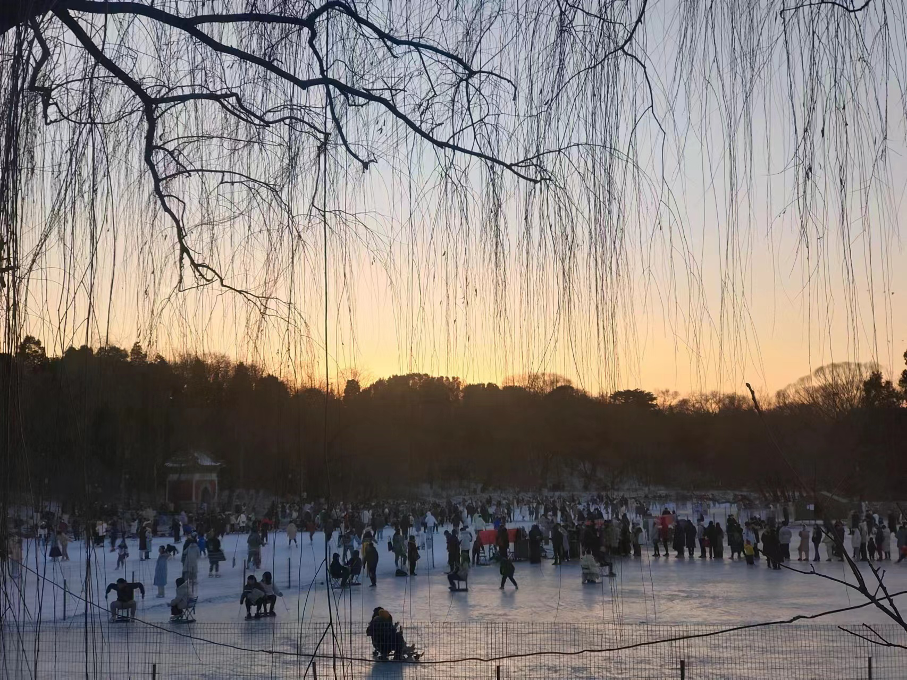
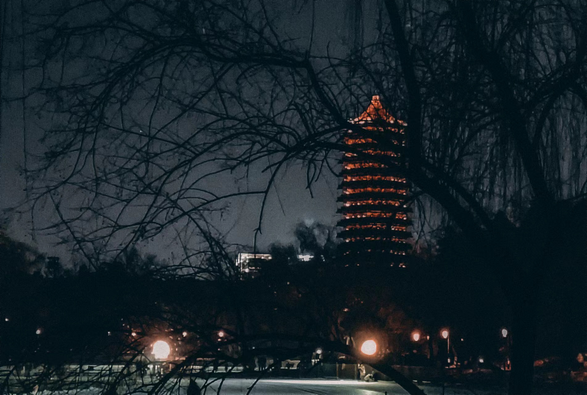

Charge into 2024
记得去年年末，厦门疫情又起来的时候，我们在一片躁动与混乱加以核酸采集的缓慢中等来了停课的消息。等到大部分人都回去，课程停摆，而我与一帮同学因为是住宿生11 尽管家并不远，但住宿生往往可用“回不去家”作为理由，得以苟留在寝室。于是我们得以和生管老师共享寝室自习室希沃上的扫雷，在一个人也没有的无垠的操场上狂奔数圈，体验了因锡纸粉关停而终于不再蒜气熏天的厦大食堂，在高三13班的教室里放声歌唱22 当然，还尊享了专门驻在学校的核酸检测资源。日复一日的授课褪去，时间表的规束解开，我何其幸运地品尝到所谓校园生活的滋味。
后来我们也被赶回了家。网课开始了。上网课的时候的懒散是不可为外人道的。房间的窗户朝西，早上的光线要看天公心情；倘若透进来的光线恰好打亮窗前的桌板，那再打开电灯就显得很不必要。即便因为一时的认真打造类同在校的读书环境，但比习题更按时完成的午觉往往也会使吊灯面临失业。所住的房屋并非位于新起的楼盘，待时间来到下午，床铺依然昏暗，不过略一抬头，就是斜射入的晃眼的光，把飘浮着的浮尘镀上银，洒在层次不齐的练习上。偏西的太阳直挺挺地打在电脑的背面，往往偷着日光便能看清琐碎的字迹。无奈补上网课走神的天坑实在过于劳神，总需再挪用一些时间聊以自慰。下午的网课往往早早结束，剩下的分钟还能得到落日的眷顾，后来就喜好在另一件朝西的房间敲几个音符，这便成为每日为数不多的期待。
在这样的期待中熬到了22年的最后一天。那天的落日与云笼罩了整个小岛。12月的厦门免不了有些寒凉，寒凉化作空气中的阴冷窜入鼻息。但太阳却是明艳。虽然免不了冬天的寒凉，免不了时间的流逝，免不了挥手告别过去的一年，但太阳什么也不说。它不过默默地注视着世界，用暖意注释着将来的生活。
在这样的图景中，世界奔向 2023。The world charges into 2023.

23年经历了许多。世事实在难料，生活实在荒谬。上半年的音乐偏好在摇滚与纯音间激烈摆动，下午起床后和晚上入睡前总借摇滚来控诉借纯音来超脱。春回大地融雪为水《漂流人间》，在《Lights are on》的夏夜则是着背心卧草坪仰望《Echos of the Eyes》；随着万青的脚步重走了一遍千禧年的世界，又从冲绳《Sundaland of mind》的海滩走向 Cyberpunk 的《Midnight City》。我难以回答一场场的考试间我究竟还期待多少美好与奇迹，那些缠绕着复杂心境的回忆在汉语里鲜有词汇对应。我盼望着脱离大地，冲上云霄、直达天际。
下半年我离开家乡的小岛，来到北京。我幸运地逃离了高中的苦海，但又投入了帝都汹涌的人海。夹杂在形色的人群中自觉自己的渺小，但森严的评价体系也不愿放走我这个新来的水滴。不过生活的艺术是忙里偷闲，周末几近定时的夜聊总是淋漓酣畅，一二九排练的放声歌唱还是能洗脱一天的疲累；小岛的好友时常来访，颇感欣慰。一些事，一些人，泛起涟漪，但来日方长，亦不晓前路几何。虽是岁末，但这些日子，或许仍未到总结的时分。

我很感谢你看到这里。
我不想错过今天的夕阳。今天的太阳将沉落于16时58分，但窗外已经暗淡了。匆匆踏上单车，赶往湖边，勉强抓住了最后的余晖。这时的暖阳素雅许多，是不同于小岛的风情。冰面映着阳光，好像窗前筼筜湖映着2022年最后的夕阳。
夜生活是现代人的专利。但太阳落下时，谁可拒日落而息的基因？
2023年送我们至此，它将要回它的归处。
生活是无限的琐碎庸常。十八年来，未曾料想，新年伊始的唯一标识，不过是简单披上睡袍，在裹挟着阴冷的木质家居的气息里，睡眼朦胧地瞥见石英钟里内嵌的数码“1月1日”。但今年不可能这样了。这里是北京，现时是期末，明天又会有明天的故事。
但我们正真确地奔向 2024。Let’s charge into 2024.
